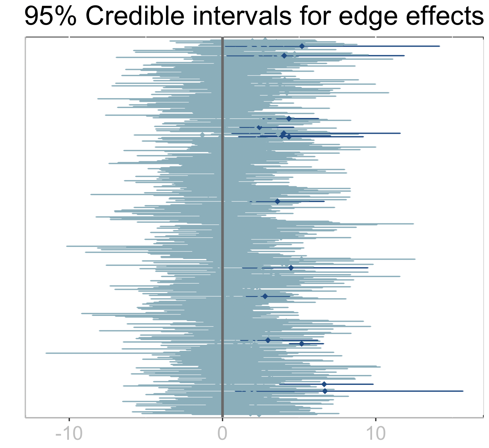
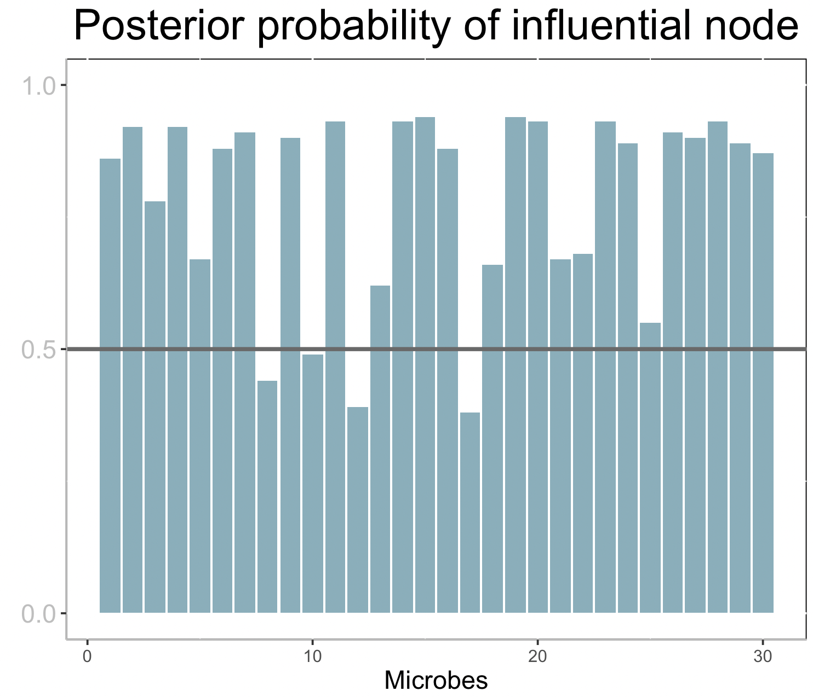

Interpreting the Model Results
Interpretation
From the Fit! and Summary functions in previous section, we end up with two tables summarizing the mean estimates for the regression coefficients for the edge effects (out.edge_coef) and the posterior probabilities that nodes are influential (out.prob_nodes):
julia> out.edge_coef
435×5 DataFrame
Row │ node1 node2 estimate lower_bound upper_bound
│ Int64 Int64 Float64 Float64 Float64
─────┼──────────────────────────────────────────────────
1 │ 1 2 2.385 -1.976 6.157
2 │ 1 3 1.823 -5.257 7.595
3 │ 1 4 1.763 -4.514 6.009
⋮ │ ⋮ ⋮ ⋮ ⋮ ⋮
433 │ 28 29 3.51 -1.251 7.376
434 │ 28 30 1.949 -3.425 6.135
435 │ 29 30 2.785 -0.772 6.042
429 rows omitted
julia> out.prob_nodes
30×1 DataFrame
Row │ probability
│ Float64
─────┼─────────────
1 │ 0.86
2 │ 0.92
3 │ 0.78
⋮ │ ⋮
28 │ 0.93
29 │ 0.89
30 │ 0.87
24 rows omittedPlot
The following R code can be used to plot the credible intervals of the edge regression coefficients.
First, we pass the data frame to R:
edges = out.edge_coef
using RCall
@rput edgesAn alternative path is to save the data frame to file with CSV.write("edges.csv",out.edge_coef) and then read in R.
In R, we type
library(ggplot2)
library(tidyr)
nn <- length(edges$node1)
edges$edge <- 1:nn
edges <- transform(edges,rej=ifelse(lower_bound > 0 | upper_bound < 0,TRUE,FALSE))
plt <- edges %>% ggplot() + geom_errorbar(aes(x=factor(edge),ymin=lower_bound,
ymax=upper_bound,
color=rej)) +
xlab("") + ylab("")+ ggtitle("95% Credible intervals for edge effects")+
scale_color_manual(values=c("#82AFBC","#0E4B87")) +
theme(
plot.title = element_text(hjust=0.5, size=rel(2)),
axis.title.x = element_text(size=rel(1.2)),
axis.title.y = element_text(size=rel(1.9), angle=90, vjust=0.5, hjust=0.5),
axis.text.x = element_text(colour="grey", size=rel(1.8), hjust=.5, vjust=.5, face="plain"),
axis.ticks.y = element_blank(),
panel.background = element_rect(fill = NA, color = "black"),
axis.line = element_line(colour = "grey"),
strip.text = element_text(size = rel(1.5)),
legend.position = "none"
) +
coord_flip() + scale_x_discrete(labels=NULL,expand=expansion(add=4)) +
geom_point(aes(x=factor(edge),y=estimate, color=rej),shape=18, size=2) +
geom_hline(aes(yintercept=0),linetype="solid",color="#696969", size=1)
plt
The dark credible intervals are those that do not intersect zero which point at potential edges (interactions among microbes) that have a significant effect on the response.
The following R code can be used to plot posterior probabilities of being influencial nodes (micrones) on the response.
First, we pass the data frame to R:
nodes = out.prob_nodes
@rput nodesAn alternative path is to save the data frame to file with CSV.write("nodes.csv",out.prob_nodes) and then read in R.
nodes$microbe <- 1:length(nodes$probability)
axisTextY =
## Plot:
plt2 <- ggplot(data=nodes,aes(x=microbe,y=probability)) +
geom_bar(stat="Identity", fill="#82AFBC") + xlab("Microbes") + ylab("") +
ggtitle("Posterior probability of influential node") +
theme(
plot.title = element_text(hjust=0.5, size=rel(2)),
axis.title.x = element_text(size=rel(1.2)),
axis.title.y = element_text(size=rel(1.9), angle=90, vjust=0.5, hjust=0.5),
axis.text.y = element_text(colour="grey", size=rel(1.5), angle=0, hjust=.5, vjust=.5, face="plain"),
panel.background = element_rect(fill = NA, color = "black"),
axis.line = element_line(colour = "grey"),
strip.text = element_text(size = rel(2))
) +
geom_hline(aes(yintercept=0.5),linetype="solid",color="#696969", size=1)+
scale_y_continuous(breaks = c(0,0.5,1),limits=c(0,1))
plt2
Each bar corresponds to the posterior probability of being an influential node (microbe) on the response. A horizontal line is drawn at 0.5, so that nodes with bars taller than the line can be considered influential.